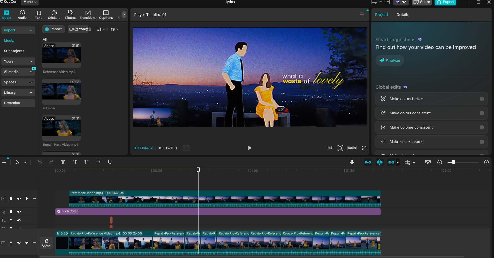
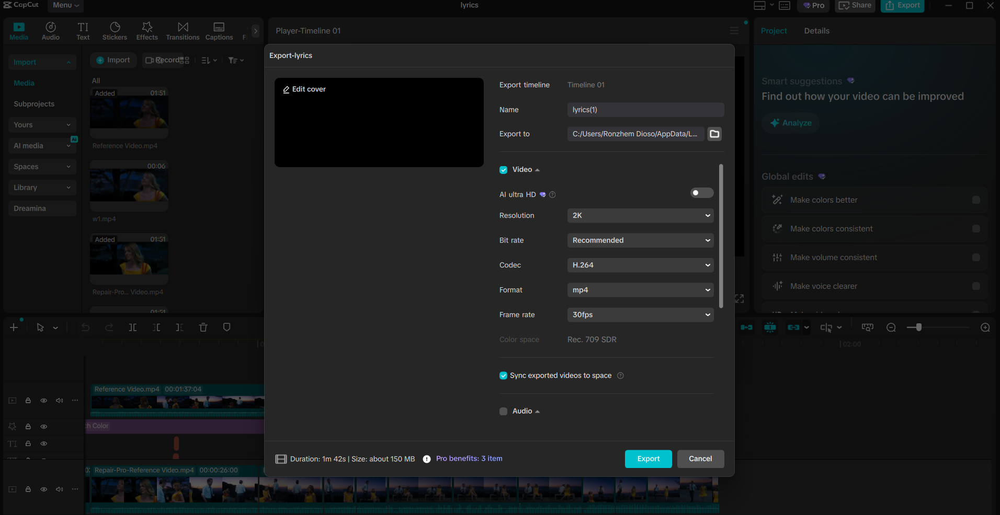

Rotoscoping
A frame-by-frame rotoscoping study tracing live-action footage to produce fluid, hand-drawn animation with natural weight and motion.
Project Video
The video posted here is for Education Purposes Only. No Copyright Infringement Intended. All Copyrighted Material Belongs to Their Respective Owners.
Step-by-Step Tutorial
How the rotoscope animation was created from scratch.
Select the source material and make sure it has good video quality for easier tracing later on.

Using CapCut, cut the video into 5-second clips or longer to make the frames easier to edit.

Create a new composition in Adobe After Effects for each 5-second video clip to prepare it for tracing.

Trace each layer, such as the clothes, hair, skin, and accessories, using the Roto Brush tool. Then freeze the layer to ensure that no further changes will be made.

Fill each layer with solid colors to make it more visually appealing. You can also add strokes and layer modes (Overlay, Multiply) to enhance your roto animation.

Add a green background color for background changes.

Export each 5-second clip through the Render Queue.

Combine all the videos in CapCut. Here, you can add audio, edit lyrics, and customize the background.

Export the combined and edited clips in MP4 format.
Weekly Progress
A breakdown of what was accomplished each week throughout the project.